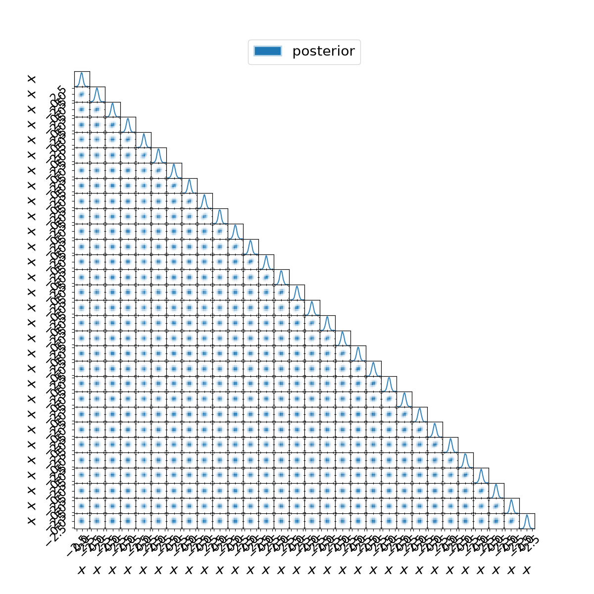

Experimental · outside Pulse · unchanged posterior · one frozen run per policy.
Driver: complete.
Charged runtime: 118.76s, including preflight. Stage times are inclusive and overlap.
| Policy | Status | Process seconds | Axes | Plotting | PNG export |
|---|---|---|---|---|---|
| thirty-small | success | 114.768 | 5.013 | 47.039 | 21.654 |
The full30D small-canvas figure tests cost, not a recommended readable default. No production settings changed.

All receipts · Portable plan · Findings
Nested inclusive times overlap; do not add rows. Self time excludes timed children; both exclude recorded snapshot I/O. Unfinished work is absent from completed totals.
Active at last snapshot: none. Recorded logging: 4.1117s.
| Call path | Completed calls | Inclusive seconds | Self seconds | Errors |
|---|---|---|---|---|
| legend | 1 | 0.0015 | 0.0015 | 0 |
| make_axes | 1 | 5.0177 | 5.0177 | 0 |
| plot_2d | 1 | 43.0088 | 13.9140 | 0 |
| plot_2d/panel_hist_2d | 435 | 22.8289 | 10.7935 | 0 |
| plot_2d/panel_hist_2d/hist_kernel | 435 | 12.0355 | 0.3723 | 0 |
| plot_2d/panel_hist_2d/hist_kernel/histogram2d | 435 | 0.7847 | 0.7847 | 0 |
| plot_2d/panel_hist_2d/hist_kernel/pcolormesh | 435 | 0.4716 | 0.4716 | 0 |
| plot_2d/panel_hist_2d/hist_kernel/quantile | 1740 | 10.4069 | 10.4069 | 0 |
| plot_2d/panel_kde_1d | 30 | 6.2659 | 0.3504 | 0 |
| plot_2d/panel_kde_1d/kde_kernel | 30 | 5.9156 | 5.5561 | 0 |
| plot_2d/panel_kde_1d/kde_kernel/quantile | 60 | 0.3594 | 0.3594 | 0 |
| savefig | 1 | 21.6280 | 0.0123 | 0 |
| savefig/agg_draw | 1 | 21.5204 | 0.0012 | 0 |
| savefig/agg_draw/figure_draw | 1 | 21.5191 | 21.5191 | 0 |
| savefig/image_write | 1 | 0.0953 | 0.0953 | 0 |
| set_labels | 1 | 0.0195 | 0.0195 | 0 |
| shared_axes | 1 | 4.7937 | 4.7937 | 0 |